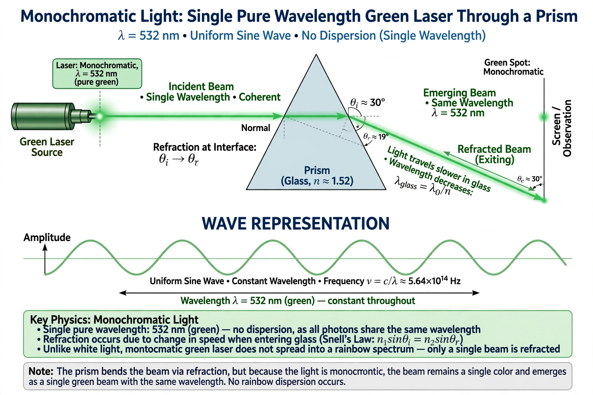

A monochromatic wavelength refers to electromagnetic radiation of a single wavelength (and thus a single frequency and color, for visible light). Strictly monochromatic radiation is an idealization; in practice, light sources produce radiation within a narrow band of wavelengths, characterized by their spectral linewidth.

Lasers are the most nearly monochromatic common sources, with linewidths that can be extremely narrow. Other sources include spectral lamps followed by filters or monochromators, which select a narrow band from a broader spectrum. Low-pressure sodium lamps emit predominantly at 589 nm, giving their characteristic yellow color.
Monochromatic light is used in interferometry, holography, spectroscopy, optical metrology, and in defining length standards — the metre was formerly defined in terms of a specific wavelength of krypton-86 emission. In photography and astronomy, narrowband filters isolate emission lines such as hydrogen-alpha.